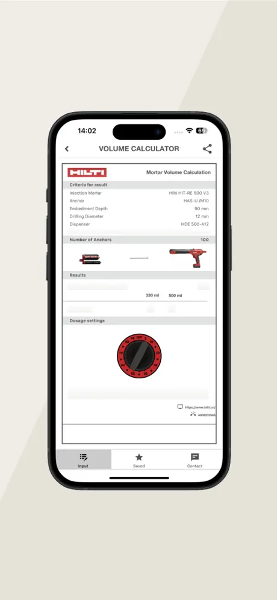

Four apps, all on the App Store
Each case study links to the App Store listing, so you can install the app and read its release history before you read what I wrote about it. They all follow the same order: Context & Scope, Architectural Blueprint, Engineering Breakthrough and Scope & Impact. Each one has the actual architecture diagram.
Why there are no code links. All four apps belong to my employers or their clients, and I'm not allowed to publish the source. What I can do is explain the architecture in detail here, and walk through it on a whiteboard with you whenever you like.




App Store listing screenshots.
Hilti: firestop compliance for three regions in .NET MAUI
{{co_c}} · {{co_c_desc}}
Senior Developer & Mentor
One codebase that builds into {{f_regions}} regulatory variants: UL for the US, ETA for Europe and DIN for Germany. Each has its own approvals data and selection logic, and ships features on its own schedule. The app has an offline library of {{f_approvals}} digitised approvals with full-text search on the device, cloud projects with Owner, Editor and Viewer roles, and engineering judgment requests sent from the jobsite. I worked on two Hilti apps that are on the App Store.
Six years on the same kind of problem
I started on Xamarin.iOS, moved to Xamarin.Forms, and now work in .NET MAUI. The whole time I've been building field software for people who can't count on a network. The framework changed twice and the problem stayed the same.
-
{{co_a_dates}} · {{co_a_short}} for E. & J. GALLO WINERY
Learning iOS itself
Xamarin.iOS works against UIKit directly, so I had to learn the view lifecycle, memory rules, and retain cycles between C# and native objects. Because of that, the frameworks I used later made sense to me instead of feeling like magic.
-
{{co_b_dates}} · {{co_b_short}} for SIEMENS GAMESA
Learning offline-first properly
We added reliable offline capture to a live app where a lost timesheet means a payment dispute. This is where saving data locally first went from an idea I agreed with to something I'd seen matter.
-
{{co_c_dates}} · {{co_c_short}}
Architecture for a whole product, and teaching it
One codebase that builds for three regulatory regions, an offline approvals library that has to be correct for compliance, and a review standard and reference code that other engineers built on.
-
{{co_d_dates}} · {{co_d_short}}
Owning it end to end
I own the mobile app at a remote US startup, in the same industrial areas. This is how I want to keep working.
Personal projects
These are smaller and rougher than the apps above. Some are mobile and some are web. This is the only code on the site that's mine to share, so it's where you can read how I write.
Pick one and ask me about it
Download the app, read the release history, then ask me the hardest question you can think of about how it works. I'd enjoy that interview.